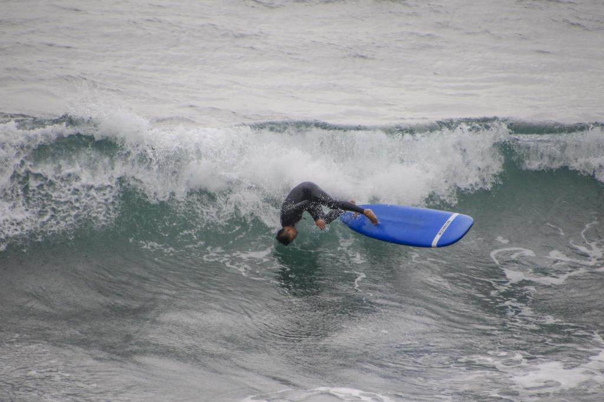

| 精選相片 | 所屬相簿 | 類型 | 上傳者 | 狀態 | 加入精選日期 | 操作人 | 瀏覽量 | 留言 | 收藏 | 分享 | 操作 |
|---|---|---|---|---|---|---|---|---|---|---|---|
| LAVA 鐵人賽新北福隆站 2017.6.25(日)_2丙14K 07:45~08:33(已完成100%) | 單車 | bart | 顯示中 | 2020年05月13日 | Eric Chong | 366 | 0 | 0 | 2 | 編輯 從精選移除 | |
| 2016.01.10 三峽鳶山山徑越野跑 | 單車 | soonnet | 顯示中 | 2020年05月13日 | Eric Chong | 366 | 0 | 0 | 2 | 編輯 從精選移除 | |
|  | 20181014-萬里-國聖埔-國聖橋-衝浪-14:31~16:01（2/3） | 水上運動 | chris | 顯示中 | 2020年05月13日 | Eric Chong | 1,366 | 4 | 20 | 5 | 編輯 從精選移除 |
| LAVA 鐵人賽新北福隆站 2017.6.25(日)_2丙14K 07:45~08:33(已完成100%) | 鐵人 | bart | 顯示中 | 2020年05月13日 | Eric Chong | 366 | 0 | 0 | 2 | 編輯 從精選移除 | |
| 香港泰拳錦標賽 | 綜合運動 | Aaron Yang | 顯示中 | 2020年05月13日 | Eric Chong | 12,366 | 1 | 4 | 2 | 編輯 從精選移除 | |
| 精選相片 | 所屬相簿 | 類型 | 上傳者 | 狀態 | 加入精選日期 | 操作人 | 瀏覽量 | 留言 | 收藏 | 分享 | 操作 |